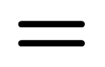

{{ thread.title }}

{{ source.title }}
{{ segment.title }} ﹆﹅
「
{{word.word}}
{{ threads[segment.snippets[index].threads[0]].title }} ↖︎
//
✕
」
{{ thread.title }} ﹆﹅
「
{{ word.word.word }}
」
{{ segments[snippets[snippetId].source].title }} ↖︎
↖︎
+